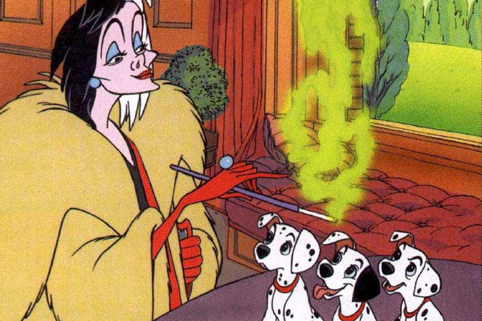
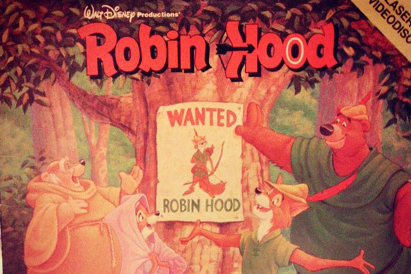
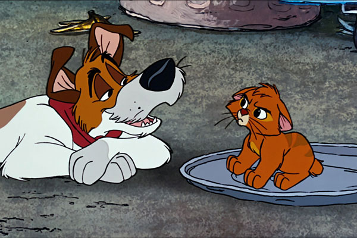
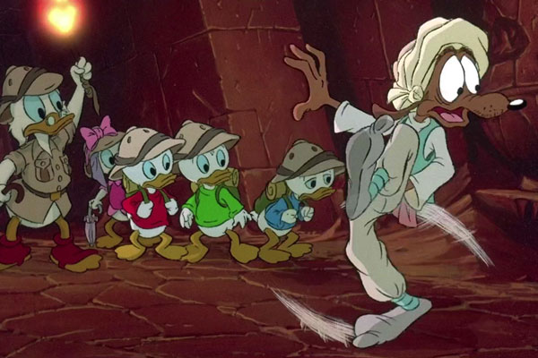

4 Classic Walt Disney Animated Movies from the 1960s to the 1990s
101 Dalmations
One Hundred and One Dalmatian is a 1961 American animated adventure film produced by Walt Disney Productions and based on the 1956 novel The Hundred and One Dalmatians by Dodie Smith. Directed by Clyde Geronimi, Hamilton Luske, and Wolfgang Reitherman, it was Disney's 17th animated feature film. The film tells the story of a litter of Dalmatian puppies who are kidnapped by the villainous Cruella de Vil ("deVille"), who wants to use their fur to make into coats. Their parents, Pongo and Perdita, set out to save their children from Cruella, in the process rescuing 84 additional puppies that were bought in pet shops, bringing the total of Dalmatians to 101.
See More...Robin Hood
Robin Hood is a 1973 American animated romantic musical comedy film produced by Walt Disney Productions and released by Buena Vista Distribution. Produced and directed by Wolfgang Reitherman, it is the 21st Disney animated feature film. The story follows the adventures of Robin Hood, Little John, and the inhabitants of Nottingham as they fight against the excessive taxation of Prince John, and Robin Hood wins the hand of Maid Marian. The film features the voices of Brian Bedford, Phil Harris, Peter Ustinov, Pat Buttram, Monica Evans, and Carole Shelley.
See More...Oliver & Company
Oliver & Company is a 1988 American animated musical film produced by Walt Disney Feature Animation and released on November 18, 1988, by Walt Disney Pictures. The 27th Disney animated feature film, the film is based on the classic Charles Dickens novel Oliver Twist, which has been adapted many other times for the screen. In the film, Oliver is a homeless kitten who joins a gang of dogs to survive in the streets. Among other changes, the setting of the film was relocated from 19th century London to modern-day New York City, Fagin's gang is made up of dogs (one of which is Dodger), and Sykes is a loan shark.
See More...Duck Tales
DuckTales the Movie: Treasure of the Lost Lamp (also known as DuckTales: The Movie) is a 1990 animated fantasy adventure film based on the animated television series DuckTales. It was released in theaters by Walt Disney Pictures on August 3, 1990. The events of the film take place between the third and fourth seasons of DuckTales.
See More...More Animated Movies that came from the 60s to 90s
| 1960s | 1970s | 1980s | 1990s |
|---|---|---|---|
| The Sword and The Stone | The Aristocrats | The Fox and the Hound | The Rescuers: Down Under |
| The Jungle Book | The Many Adventures of Winnie the Pooh | The Black Cauldron | Beauty and the Beast |
| No More Animated Movies :( | The Rescuers | The Great Mouse Detective | Aladdin |